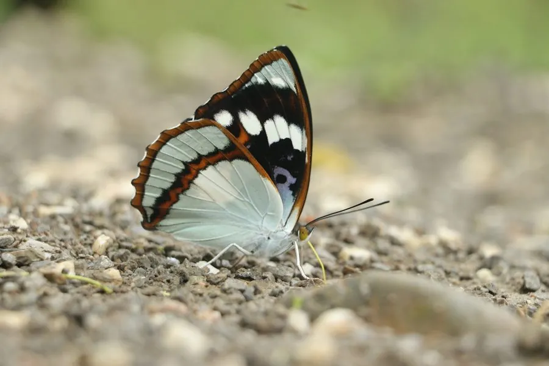

昆虫 · 动物界
白斑迷蛱蝶 Mimathyma schrenckii

翅面黑褐、前翅有一块醒目白色大斑的蛱蝶，停歇时如一片碎纸，幼虫以杨柳科植物为食。
- 分类
- 门节肢动物门纲昆虫纲目鳞翅目科蛱蝶科属迷蛱蝶属
- 栖息环境
- 山地阔叶林、沟谷、林缘与溪流旁
- 地理分布
- 中国东北、华北、华中、西南山区及朝鲜半岛、俄罗斯远东
- 保护级别
- 暂无专门保护级别，生境改造是潜在威胁
物种志
白斑迷蛱蝶的翅展约六至七厘米。翅面黑褐色，前翅中室到顶角有一块不规则的白色大斑，后翅外缘有一列橙色小斑，翅反面灰褐，具细密的波状横纹。它停歇在树干或落叶上时，白斑与暗色底形成强烈对比，轮廓破碎，像一片被撕开的枯叶，这种破坏性色彩让它不易被天敌识别。
它分布于中国东北、华北、华中和西南山区，以及朝鲜半岛和俄罗斯远东，栖息在山地阔叶林、沟谷和林缘。成虫在夏季出现，飞行快速，喜停在湿润地面和树干上吸水、吸食树汁，雄蝶常在溪边聚集。幼虫以杨属、柳属等杨柳科植物为食，以幼虫越冬，翌年春季取食嫩叶后化蛹。目前尚无专门保护级别，山地开发与林相改造会压缩其适宜生境。
形态与习性
- 翅展约六至七厘米
- 白斑前翅中室至顶角一块不规则大白斑
- 翅反面灰褐底，细密波状横纹
- 食性幼虫取食杨属、柳属等杨柳科植物
- 越冬以幼虫越冬，春季取食嫩叶
- 习性爱停在湿地与树干上吸水、吸树汁
趣味知识
- 翅上的白斑把身形切成几段，停在树皮上就像一片撕碎的枯叶。
- 它喜欢在溪边湿地上摊开翅膀吸水，从中获取钠等矿物质。
- 名字里的迷字，说的正是它停歇时让人一时认不出的伪装。